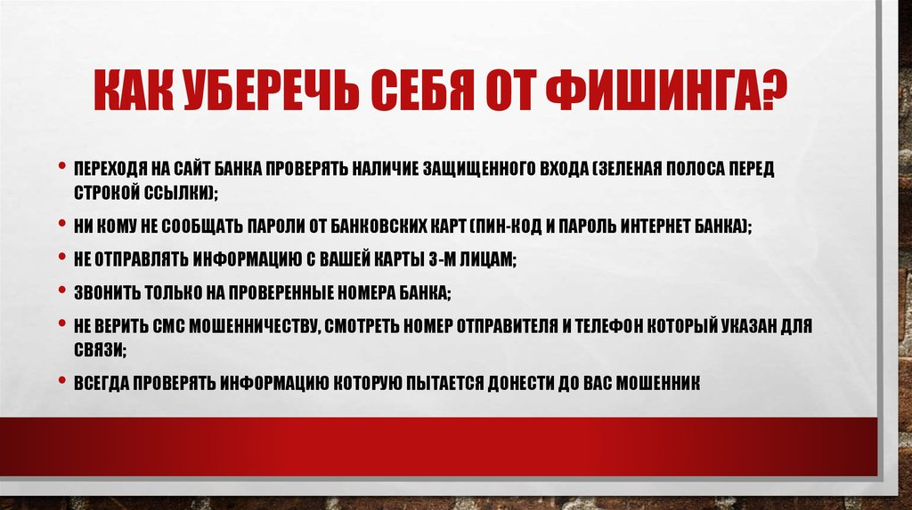
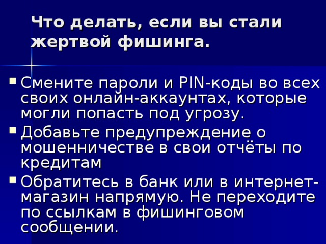

Иногда киберпреступники отправляются на рыбалку. Только их золотая рыбка — это ваши данные. Итак, что нужно сделать, чтобы защитить себя от фишинга?
От фишинга нет универсального лекарства, кроме бдительности на грани паранойи. Проблема в том, что эта зараза похожа на грипп — постоянно мутирует и меняет методы атаки. Мошенники, стоящие за фишинговыми операциями, могут запустить персональную кампанию, направленную, например, только на сотрудников определенной организации или лишь на кормящих матерей. Такой вредоносный маркетинг.
Способов попасться масса: подключиться к публичному Wi-Fi в кафе с авторизацией по учетной записи социальной сети, ввести свои данные на поддельном сайте, перейти по ссылке в очередном письме счастья на Новый год или черную пятницу… Всего не перечислишь.
В общем, заполучить эту проблему легко. А как себя защитить? 1.Бесплатный сыр бывает только в мышеловке. При покупке того или иного товара нужно объективно оценивать его стоимость, например, если вам предлагают новый Iphone со скидкой 80%, скорее всего, это обман. 2.Не используйте одни и те же учетные данные. Многие пользователи регистрируются с одним логином и паролем, если злоумышленник получает ваши аутентификационные данные, он имеет доступ ко всем вашим сервисам. 3.Будьте осторожны при получении письма о смене пароля. Данный подход активно используется для изъятия ваших персональных данных (логин , пароль ). Рекомендуется в случае необходимости смены пароля делать процедуру непосредственно с самого сайта, потому что в полученном письме вы можете быть перенаправлены на фейковый ресурс. 4.Обращайте внимание на стиль написания полученного письма (синтаксические и орфографические ошибки и прочее). 5.Когда вы переходите на различные ресурсы, обращайте внимание на протокол, который они используют. На сегодняшний день уже более 80% сайтов перешли на шифрованное соединение (HTTPS), если вдруг вам предлагают вводить данные вашей банковской карты и на сайте авторизации используется HTTP - первый сигнал о том, чтобы вы ничего не вводили и покинули ресурс. 6.Всегда внимательно проверяйте ссылку, по которой собираетесь кликнуть: не перепутаны ли буквы в названии сайта. Если с написанием что-то не так, это верный признак, что мошенники подсовывают вам поддельную страницу.
7.Перед тем как вводить логин и пароль, нужно проверить, защищено ли соединение. Если перед адресом сайта вы увидите префикс https (где «s» означает secure — безопасное), то все в порядке. 8.Даже если письмо или сообщение со ссылкой пришло от лучшего друга, все равно нужно помнить, что его тоже могли обмануть или взломать. Поэтому ведите себя не менее осторожно, чем при обращении со ссылками, пришедшими из неизвестного источника. 9.То же самое касается писем, отправленных из официальных инстанций и организаций: банков, налоговой, онлайн-магазинов, бюро путешествий, авиакомпаний и так далее. Даже с вашей работы. Не так уж трудно подделать официальное письмо настолько достоверно, что от реального его отличить будет очень сложно. 10.Иногда фальшивые письма и фальшивые сайты во всем повторяют дизайн настоящих. Качество подделки зависит от того, насколько хорошо преступники выполнили «домашнюю работу». А вот гиперссылки, скорее всего, будут неправильные — или с ошибками, или вообще будут ссылаться не туда. По этим признакам можно отличить фишинговое письмо от настоящего. 11.Вместо того чтобы кликать по ссылке, гораздо надежнее ввести адрес вручную в новом окне браузера. Следуя этому сценарию, вы не упустите шанс принять участие в акции или получить извещение из налоговой (если акция или извещение действительно есть) — и не попадетесь на удочку фишеров. 12.Обнаружив фишинговую операцию, крайне желательно сообщить о ней в банк (если письмо пришло от имени финансового учреждения) или в службу поддержки соцсети (если такие ссылки рассылает кто-то из пользователей) и так далее. Так вы поможете вовремя остановить мошенников. 13.По возможности не заходите в онлайн-банки и тому подобные сервисы через открытые Wi-Fi-сети в кафе или на улице. Лучше воспользоваться мобильным Интернетом или потерпеть, чем потерять все деньги на карте. Дело в том, что за таким Wi-Fi могут стоять мошенники, подменяющие адрес сайта на уровне подключения и перенаправляющие вас таким образом на поддельную страницу. 14.Файл, присланный товарищем по игре, с тем же успехом может оказаться трояном-шпионом или даже трояном-вымогателем, как и вложения к письмам и сообщениям. Будьте бдительны! 15.Установите Kaspersky Internet Security и следуйте его рекомендациям, наше защитное решение поможет вам всегда оставаться начеку, а большую часть проблем предотвратит автоматически.

